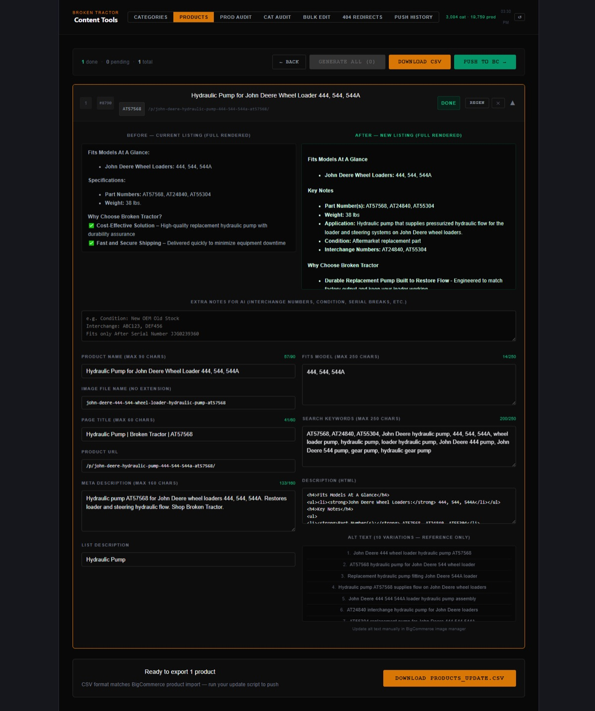
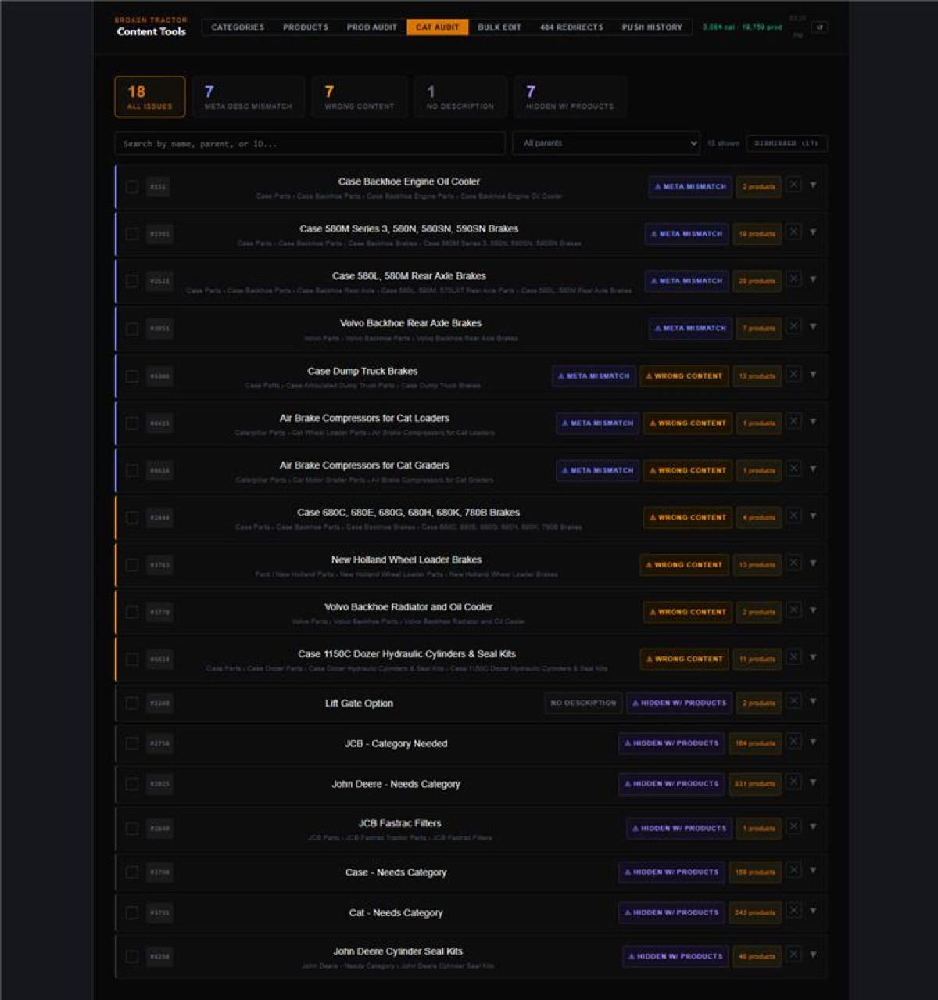
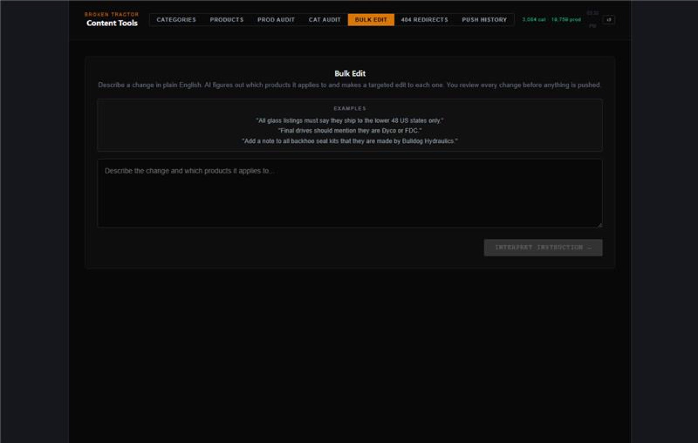
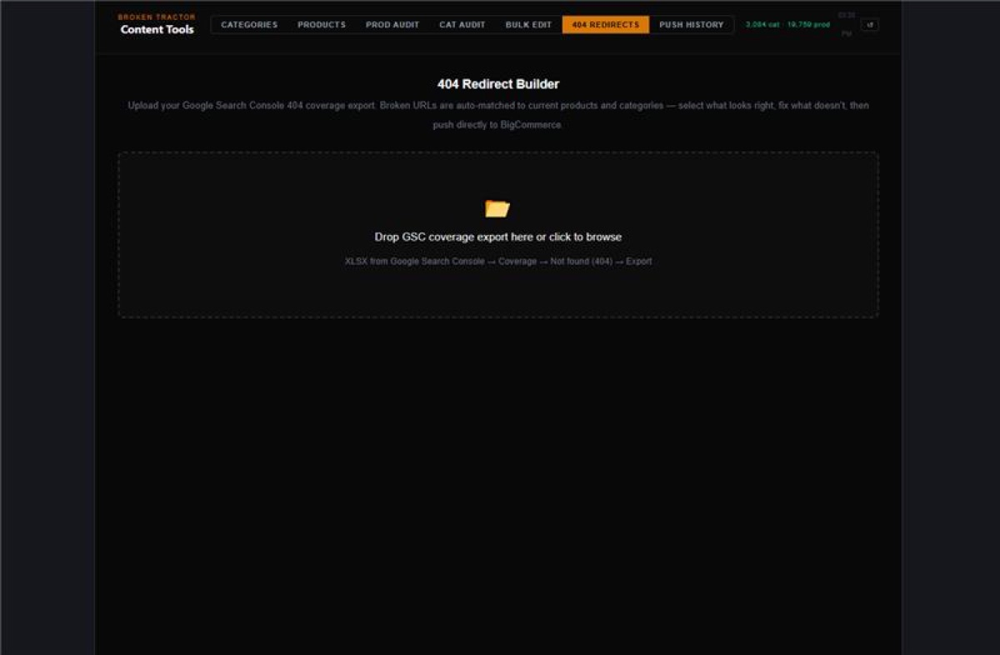
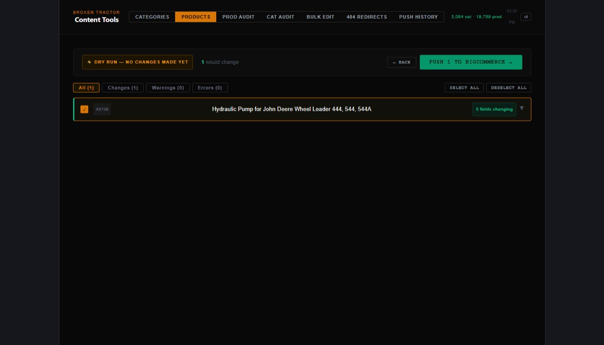
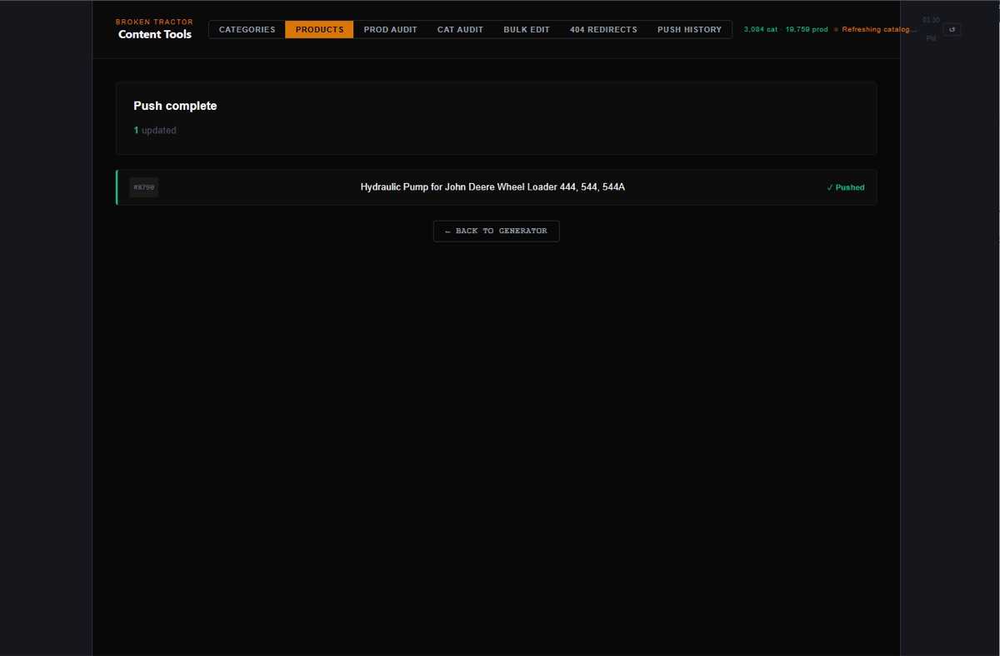
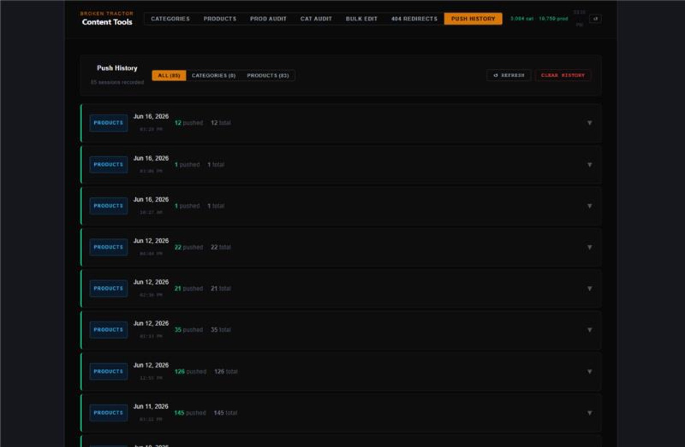

Broken Tractor's catalog had grown to nearly 20,000 products and 3,000 categories - most with incomplete or missing descriptions, titles, and metadata. Writing and publishing listings manually would have taken months of full-time work. Beyond creation, there was no way to audit the catalog: no tool could answer "which of our 20,000 listings are missing fitment data?" or "which category descriptions were pasted into the wrong category?" And when a business policy changed - like a new shipping restriction on glass - someone had to find and edit every affected listing by hand.
The project started as a simple category description generator - hence its internal name, "category-generator." But as the team saw what it could do, it kept growing. Today it's a full internal listing platform with eight modules: AI generation for categories and products, rule-based audits across the entire store, plain-English bulk editing, a 404 redirect builder, and a dry-run push pipeline that makes every change reviewable before it touches the live store.
Pulls live categories from BigCommerce through a searchable, hierarchical picker (or a quick paste mode), then generates all eight listing fields per category - display name, URL, SEO description, page title, meta description, and keywords. Claude receives the category name, its parent, and up to 50 real products from that category as context, so descriptions reflect what's actually in the category. Existing images embedded in old descriptions are automatically preserved.
Generates complete product listings from raw source data: name, description, page title, meta description, URL, image filename, ten varied alt-text strings, search keywords, and fitment fields. It handles the catalog's special cases - kits, glass, LTL freight, YouTube embeds, OEM parts, and rebuild-and-return services - each with its own required structure and wording. When the source data is ambiguous, Claude asks clarifying questions instead of guessing; questions export to a styled Excel sheet the team fills in and imports back, and the answers feed the next generation pass.

Scans every SKU in the library against nine rule categories: missing or stub descriptions, old-style listings missing required sections, empty or placeholder fitment data ("TBA"), missing list descriptions, corrupted UTF-8 characters, unprocessed AI output that slipped through, and even misspelled custom field names (caught with fuzzy string matching). Results filter by issue type, category, and storefront visibility - and flagged products can be queued straight into the Product Wizard for regeneration, or bulk-hidden from the storefront pending research.
The same idea applied to categories, with a twist: a part-type vocabulary engine. Twelve part-type vocabularies (filters, hydraulics, undercarriage, final drives, cooling, electrical, and so on) score each category's description and meta description against its name - so a "Filters" category whose meta description talks about engine manifolds gets flagged as wrong-content, the classic sign of a copy-paste mistake. One click loads the offending category into the generator to fix.

Mass editing in plain English. A manager types an instruction like "all glass listings must say they ship to the lower 48 states only." Claude interprets it into a structured plan: which fields may change, and which product or category keywords select the targets. The app then shows every matched product with the reason it matched, so false positives are visible and deselectable before anything happens. A second AI pass applies the edit to each product - changing only what the instruction requires and preserving everything else. A sanity check warns if the filter catches more than 250 products or 10% of the catalog.

Turns Google Search Console's 404 report into live 301 redirects. Upload the export, and the app matches each broken URL to its current home - first by extracting part numbers from the URL and matching against SKUs (high confidence), then by fuzzy word-similarity scoring against current product and category URLs. Every match shows its confidence level and a one-click link to verify on the live store, unmatched URLs can be fixed manually with a built-in search, and confirmed redirects push to BigCommerce in bulk.

Nothing reaches the live store blind. Every push starts as a dry run: the server fetches the current BigCommerce state for each item, diffs every field, validates the HTML, and checks for duplicate URLs - then shows before/after side by side with live character counts against each field's limit. Only after review and an explicit confirmation does the live push run, and if items fail, a retry-failed workflow re-pushes just those without touching the successes. Every session is logged server-side - a persistent history of who pushed what, when, with per-item results.



The hardest engineering in this app isn't the code - it's the prompts. The system prompts encode years of business rules so the output is publish-ready, not just plausible:
The frontend is a React 19 + Vite app; the backend is an Express server that exists first and foremost to keep API credentials out of the browser - every BigCommerce and Anthropic call is proxied server-side. On startup the server syncs the entire catalog (nearly 20,000 products with custom fields, page by page at BigCommerce's 250-item limit) into an in-memory cache, so audits and searches across the whole store are instant.
This project had a second job: it's how I learned React. I built a structured curriculum around the app itself - a phased syllabus, a written "textbook" where every chapter points at real code in this repo, and a small practice app for trying each concept before applying it to production - supplemented by the official React docs and sample projects along the way. State and events, effects and persistence, refs and stale closures - each lesson was grounded in a real problem this app had to solve. The result is a production tool and a working knowledge of React earned by shipping it.
What began as a description generator became the team's core catalog tool: nearly 20,000 products and 3,000 categories generated, audited, and maintained through one app. Policy changes that used to mean hours of manual edits are now a plain-English instruction with a reviewable diff. Broken links from years of URL changes were reclaimed as 301 redirects. And every change to the live store passes through a dry-run review first - scale without losing control.